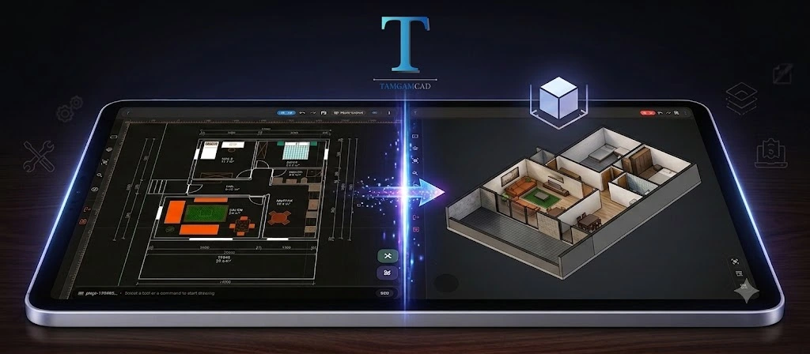

2D Teknik Çizimleri 3D Görselleştirme

Teknik çizim dünyasında 3D modelleme giderek daha fazla kullanılsa da 2D teknik çizimler hâlâ mimarlık, mühendislik, imalat, CNC, mobilya, iç mimarlık, peyzaj ve birçok farklı teknik çalışma alanının temelini oluşturuyor. Bir parçanın ölçülerini, geometrisini, katmanlarını ve üretim için gerekli detaylarını açık ve kontrollü bir şekilde ifade etmek söz konusu olduğunda 2D CAD çizimleri hâlâ oldukça önemli.
Ancak 2D çizimlerin önemli bir dezavantajı bulunuyor: Her kullanıcı, yalnızca üstten veya düzlem üzerindeki bir teknik çizime bakarak ortaya çıkacak geometrinin üç boyutlu yapısını aynı kolaylıkla zihninde canlandıramayabiliyor. İşte tam bu noktada 2D çizimleri 3D olarak görselleştirme fikri önem kazanıyor.
2D Teknik Çizim Neden Hâlâ Bu Kadar Önemli?
3D tasarım araçlarının gelişmesine rağmen 2D CAD, teknik iletişimin en anlaşılır yöntemlerinden biri olmaya devam ediyor. Özellikle ölçülendirme, kesitler, planlar, görünüşler, detay çizimleri ve üretim bilgileri söz konusu olduğunda iki boyutlu çizimler oldukça işlevsel.
Bir mimari plan, makine parçasının teknik resmi, mobilya üretim çizimi, CNC için hazırlanan bir geometri veya mühendislik projesindeki detay çizimleri çoğu zaman 2D ortamda daha hızlı hazırlanabiliyor. Bunun önemli nedenlerinden biri de çizimin yalnızca görsel bir model olmaktan çıkıp doğrudan ölçü, koordinat ve geometri bilgisi taşımasıdır.
Bu nedenle 2D CAD programları, yalnızca eski bir tasarım yönteminin devamı olarak değil, teknik çizimin temel çalışma ortamlarından biri olarak değerlendirilebilir.
2D Çizimi 3D Olarak Görüntülemek Ne İşe Yarar?
Bir teknik çizimin doğru olması kadar, çizimin karşıdaki kişi tarafından doğru anlaşılması da önemlidir. Özellikle proje sahibi, müşteri, öğrenci, saha çalışanı veya farklı bir teknik disiplinle çalışan bir ekip üyesi, 2D çizimdeki geometrinin gerçek hayatta nasıl görüneceğini ilk bakışta anlayamayabilir.
3D görselleştirme burada teknik çizimin yerine geçen ayrı bir tasarım süreci olmak zorunda değildir. Aksine, mevcut 2D geometrinin mekânsal yapısını daha kolay anlamaya yardımcı olan tamamlayıcı bir görüntüleme yöntemi olarak düşünülebilir.
Örneğin bir plan üzerinde çizilmiş kapalı bir geometrinin yükseklik kazandığında nasıl görüneceğini düşünmek yerine, çizimi üç boyutlu olarak incelemek kullanıcıya daha doğrudan bir görsel fikir verebilir. Bu yaklaşım özellikle proje anlatımı, tasarım kontrolü ve hızlı görsel değerlendirme sırasında faydalı olabilir.
TamgamCAD'de 2D'den 3D Görselleştirmeye Geçiş
TamgamCAD ile geliştirdiğimiz yeni 2D → 3D görselleştirme özelliğinin temel amacı, kullanıcıların hazırladıkları teknik çizimleri farklı bir bakış açısından inceleyebilmesini sağlamak.
Böylece kullanıcı, üzerinde çalıştığı 2D CAD çizimini yalnızca düzlem üzerinde görmekle sınırlı kalmadan, çizimin üç boyutlu görünümünü de değerlendirebilir. Bu özellik özellikle teknik çizimin geometrisini hızlı şekilde kontrol etmek ve bir tasarımın mekânsal algısını güçlendirmek isteyen kullanıcılar için pratik bir yardımcı olarak düşünülebilir.
Buradaki yaklaşımın önemli noktalarından biri, 3D görünümü ayrı bir uygulamada yeniden oluşturmak yerine mevcut teknik çizim üzerinden çalışabilmektir. Böylece kullanıcı, çizim hazırlama sürecinden tamamen kopmadan farklı bir görüntüleme deneyimine geçebilir.
DXF Dosyaları ve 3D Görselleştirme
Teknik çizim sektöründe DXF, farklı CAD yazılımları arasında çizim verilerinin paylaşılmasında yaygın olarak kullanılan dosya formatlarından biridir. Bir projenin farklı cihazlarda görüntülenmesi, düzenlenmesi veya başka bir çalışma ortamına aktarılması gerektiğinde DXF desteği önemli bir avantaj sağlayabilir.
Özellikle sahada veya ofis dışında çalışan kullanıcılar için bilgisayarda bulunan bir DXF dosyasını yalnızca masaüstünde açabilmek yeterli olmayabilir. Telefon veya tablet üzerinden teknik çizime ulaşmak, çizimi incelemek ve gerektiğinde düzenlemek çalışma sürecini daha esnek hâle getirebilir.
TamgamCAD'in DXF görüntüleme ve düzenleme yetenekleri ile 2D teknik çizimler mobil çalışma ortamına taşınabilir. Yeni 3D görselleştirme yaklaşımı ise bu çizimlerin farklı bir perspektiften incelenmesine yardımcı olur.
Mobil CAD ve Tablet CAD Kullanıcıları İçin Neden Önemli?
CAD kullanımı artık yalnızca masaüstü bilgisayarlarla sınırlı değil. Mimarlar, mühendisler, teknikerler, öğrenciler, saha ekipleri ve teknik çizimle çalışan farklı kullanıcı grupları projelerine hareket hâlindeyken de erişmek isteyebiliyor.
Mobil CAD yaklaşımının en önemli avantajlarından biri, teknik çizime ihtiyaç duyulan yere bilgisayarı taşımadan ulaşabilmektir. Özellikle tablet ekranının sunduğu daha geniş çalışma alanı, teknik çizimleri incelemek ve çizim üzerinde işlem yapmak için telefon ekranına göre daha rahat bir çalışma deneyimi sunabilir.
Örneğin bir proje toplantısında, şantiyede, üretim alanında, eğitim sırasında veya müşteriyle yapılan bir görüşmede teknik çizimin hızlıca açılıp incelenmesi gerekebilir. Bu gibi durumlarda tablet üzerinde CAD kullanımı, masaüstü çalışma ortamını tamamlayan pratik bir çözüm hâline gelebilir.
TamgamCAD'in amacı da CAD kullanımını yalnızca belirli bir çalışma masasına bağlı bırakmadan, teknik çizim üzerinde çalışmak isteyen kullanıcıya daha hareketli bir çalışma ortamı sunmaktır.
3D Görselleştirme Hangi Durumlarda Faydalı Olabilir?
2D çizimin 3D olarak görüntülenmesi her proje için zorunlu değildir. Ancak bazı durumlarda teknik çizimin anlaşılmasını ve anlatılmasını kolaylaştırabilir.
- Tasarım kontrolü: Çizimin geometrisini farklı bir bakış açısından değerlendirmek.
- Proje sunumu: Teknik çizimin mekânsal yapısını teknik olmayan kişilere daha kolay anlatmak.
- Mobil çalışma: Teknik çizimi ofis dışında incelemek ve proje üzerinde çalışmak.
- Eğitim: Öğrencilerin 2D geometriler ile üç boyutlu yapı arasındaki ilişkiyi daha kolay kavramasına yardımcı olmak.
- Üretim öncesi kontrol: Bir geometrinin farklı bir perspektiften değerlendirilmesini sağlamak.
- Proje iletişimi: Teknik ekipler arasında çizimin daha kolay anlaşılmasına yardımcı olmak.
2D CAD ile 3D Modelleme Aynı Şey Değildir
Burada önemli bir ayrımı belirtmek gerekir: 3D görselleştirme ile tam kapsamlı 3D modelleme aynı şey değildir.
3D modelleme; yüzeylerin, katıların, hacimlerin ve üç boyutlu geometrilerin oluşturulmasını içeren kapsamlı bir tasarım sürecidir. 2D çizimin 3D olarak görselleştirilmesi ise mevcut çizimin üç boyutlu algısını destekleyen bir görüntüleme yaklaşımıdır.
Bu nedenle 2D CAD kullanan bir kişinin her proje için tamamen farklı bir 3D modelleme iş akışına geçmesi gerekmeyebilir. Bazı durumlarda ihtiyaç duyulan şey yalnızca mevcut çizimin üç boyutlu yapısını daha hızlı anlayabilmektir.
Teknik Çizimden Proje Anlatımına
Teknik çizim yalnızca çizgilerden ve geometrik şekillerden oluşmaz. Aynı zamanda tasarımcının fikrini başka bir kişiye aktarma aracıdır. Bu nedenle iyi bir CAD yazılımının yalnızca çizim yapmayı değil, çizimin anlaşılmasını da kolaylaştırması önemlidir.
Bir teknik çizimi hazırlayan kişi için çizimdeki geometri oldukça açık olabilir. Fakat çizime ilk kez bakan başka bir kişi için aynı geometri farklı şekilde algılanabilir. 3D görselleştirme, bu iki bakış açısı arasındaki iletişimi güçlendiren yardımcı araçlardan biri olabilir.
Bu açıdan bakıldığında 2D ve 3D birbirinin alternatifi olmak zorunda değildir. 2D teknik çizim ölçü ve geometri bilgisini sunarken, 3D görselleştirme bu bilginin mekânsal olarak algılanmasını destekleyebilir.
TamgamCAD ile Daha Esnek Bir CAD Çalışma Deneyimi
TamgamCAD'i geliştirirken hedefimiz yalnızca yeni çizim araçları eklemek değil, teknik çizimle çalışan kullanıcıların gerçek çalışma süreçlerini kolaylaştıran bir CAD deneyimi oluşturmak.
Çizim araçları, katman yönetimi, hassas yakalama seçenekleri, düzenleme araçları ve DXF desteğinin yanında 2D çizimlerin farklı şekilde incelenebilmesini sağlayan yeni özellikler de bu yaklaşımın bir parçası.
Özellikle mobil ve tablet kullanıcıları için CAD deneyiminin yalnızca “bilgisayardaki programın küçük ekrana taşınması” şeklinde düşünülmemesi gerektiğine inanıyoruz. Dokunmatik kullanım, hareket hâlinde çalışma, hızlı dosya erişimi ve teknik çizimi farklı ortamlarda değerlendirebilme gibi ihtiyaçlar da mobil CAD deneyiminin önemli parçalarıdır.
Kimler İçin Faydalı Olabilir?
2D teknik çizim ve 3D görselleştirme özelliklerinin bir arada bulunması, farklı kullanıcı grupları için çeşitli kullanım senaryoları oluşturabilir.
- Mimarlar: Plan ve teknik çizimleri farklı bir perspektiften değerlendirmek için.
- Mühendisler: Teknik geometrileri hızlı şekilde incelemek ve kontrol etmek için.
- Teknikerler: Sahada veya üretim alanında çizimlere erişmek için.
- CNC kullanıcıları: DXF tabanlı teknik geometrileri mobil ortamda incelemek için.
- Mobilya ve iç mimarlık çalışanları: Tasarımların geometrisini daha anlaşılır şekilde değerlendirmek için.
- Öğrenciler: 2D çizim ile üç boyutlu geometri arasındaki ilişkiyi öğrenmek için.
- Teknik çizim yapan profesyoneller: Projelerini masaüstü dışındaki ortamlarda incelemek için.
Sonuç: 2D Çizimden Daha Fazlasını Görmek
2D CAD, teknik çizimin temel araçlarından biri olmaya devam ediyor. Ancak günümüzde kullanıcıların ihtiyaçları yalnızca çizim oluşturmakla sınırlı değil. Hazırlanan çizimin farklı açılardan incelenmesi, daha kolay anlatılması ve mobil cihazlarda erişilebilir olması da giderek daha önemli hâle geliyor.
2D teknik çizimleri 3D olarak görselleştirme yaklaşımı, bu ihtiyaca farklı bir bakış açısı getiriyor. Amaç 2D çizimin önemini azaltmak değil; mevcut teknik çizimin anlaşılmasını ve değerlendirilmesini desteklemek.
TamgamCAD'in yeni 2D → 3D görselleştirme özelliği de bu düşünceyle geliştirildi. Teknik çiziminizi hazırlayın, DXF dosyalarınızla çalışın ve projenizi farklı bir perspektiften inceleyin. Böylece CAD çalışma süreciniz yalnızca çizim yapmakla sınırlı kalmasın.
2D Teknik Çizimlerinizi Farklı Bir Perspektiften İnceleyin
Mobil ve masaüstü cihazlarda teknik çizimlerinizi hazırlamak, DXF dosyalarınızı görüntülemek ve düzenlemek ve yeni 3D görselleştirme deneyimini keşfetmek için TamgamCAD'in özelliklerine göz atın.
TamgamCAD Özelliklerini İncele